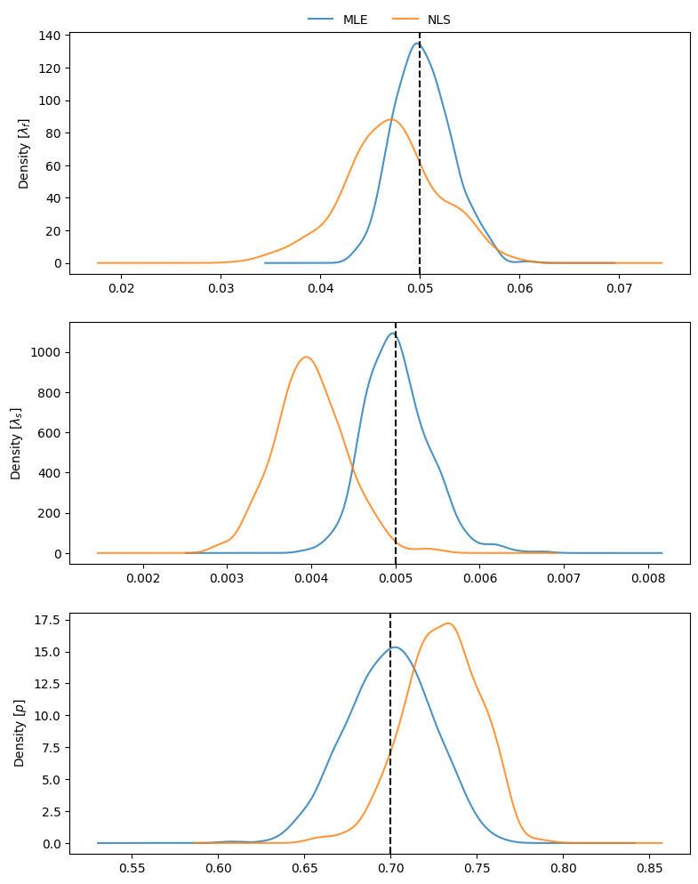
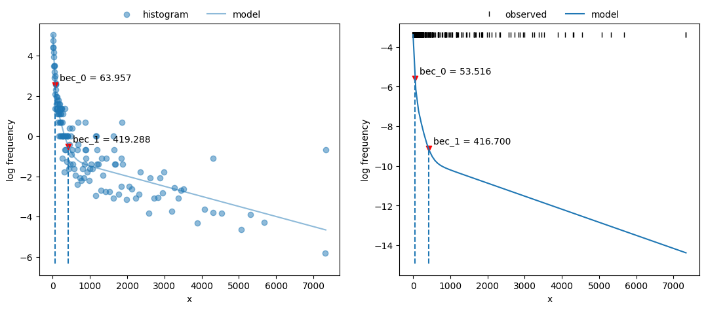
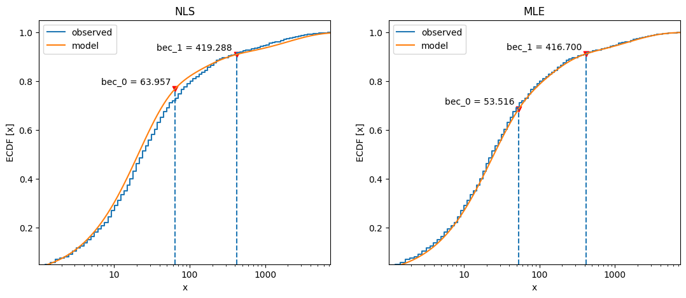

Simulating bouts#
This follows the simulation of mixed Poisson distributions in Luque & Guinet (2007), and the comparison of models for characterizing such distributions.
Set up the environment.
# Set up
import numpy as np
import pandas as pd
import matplotlib.pyplot as plt
import skdiveMove.bouts as skbouts
# For figure sizes
_FIG3X1 = (9, 12)
Generate two-process mixture#
For a mixed distribution of two random Poisson processes with a mixing
parameter \(p=0.7\), and density parameters \(\lambda_f=0.05\), and
\(\lambda_s=0.005\), we use the
random_mixexp() function to generate samples.
Define the true values described above, grouping the parameters into a
Series to simplify further operations.
1p_true = 0.7
2lda0_true = 0.05
3lda1_true = 0.005
4pars_true = pd.Series({"lambda0": lda0_true,
5 "lambda1": lda1_true,
6 "p": p_true})
Declare the number of simulations and the number of samples to generate:
1# Number of simulations
2nsims = 500
3# Size of each sample
4nsamp = 1000
Set up variables to accumulate simulations:
1# Set up NLS simulations
2coefs_nls = []
3# Set up MLE simulations
4coefs_mle = []
5# Fixed bounds fit 1
6p_bnd = (-2, None)
7lda0_bnd = (-5, None)
8lda1_bnd = (-10, None)
9opts1 = dict(method="L-BFGS-B",
10 bounds=(p_bnd, lda0_bnd, lda1_bnd))
11# Fixed bounds fit 2
12p_bnd = (1e-1, None)
13lda0_bnd = (1e-3, None)
14lda1_bnd = (1e-6, None)
15opts2 = dict(method="L-BFGS-B",
16 bounds=(p_bnd, lda0_bnd, lda1_bnd))
Perform the simulations in a loop, fitting the nonlinear least squares (NLS) model, and the alternative maximum likelihood (MLE) model at each iteration.
1# Set up a random number generator for efficiency
2rng = np.random.default_rng()
3# Estimate parameters `nsims` times
4for i in range(nsims):
5 x = skbouts.random_mixexp(nsamp, pars_true["p"],
6 (pars_true[["lambda0", "lambda1"]]
7 .to_numpy()), rng=rng)
8 # NLS
9 xbouts = skbouts.BoutsNLS(x, 5)
10 init_pars = xbouts.init_pars([80], plot=False)
11 coefs, _ = xbouts.fit(init_pars)
12 p_i = skbouts.bouts.calc_p(coefs)[0][0] # only one here
13 coefs_i = pd.concat([coefs.loc["lambda"], pd.Series({"p": p_i})])
14 coefs_nls.append(coefs_i.to_numpy())
15
16 # MLE
17 xbouts = skbouts.BoutsMLE(x, 5)
18 init_pars = xbouts.init_pars([80], plot=False)
19 fit1, fit2 = xbouts.fit(init_pars, fit1_opts=opts1,
20 fit2_opts=opts2)
21 coefs_mle.append(np.roll(fit2.x, -1))
Non-linear least squares (NLS)#
Collect and display NLS results from the simulations:
1nls_coefs = pd.DataFrame(np.vstack(coefs_nls),
2 columns=["lambda0", "lambda1", "p"])
3# Centrality and variance
4nls_coefs.describe()
| lambda0 | lambda1 | p | |
|---|---|---|---|
| count | 500.000 | 5.000e+02 | 500.000 |
| mean | 0.047 | 3.991e-03 | 0.729 |
| std | 0.005 | 4.214e-04 | 0.022 |
| min | 0.032 | 2.828e-03 | 0.654 |
| 25% | 0.044 | 3.711e-03 | 0.715 |
| 50% | 0.047 | 3.972e-03 | 0.730 |
| 75% | 0.050 | 4.268e-03 | 0.745 |
| max | 0.060 | 5.552e-03 | 0.789 |
Maximum likelihood estimation (MLE)#
Collect and display MLE results from the simulations:
1mle_coefs = pd.DataFrame(np.vstack(coefs_mle),
2 columns=["lambda0", "lambda1", "p"])
3# Centrality and variance
4mle_coefs.describe()
| lambda0 | lambda1 | p | |
|---|---|---|---|
| count | 500.000 | 5.000e+02 | 500.000 |
| mean | 0.050 | 5.022e-03 | 0.699 |
| std | 0.003 | 3.883e-04 | 0.025 |
| min | 0.043 | 3.924e-03 | 0.608 |
| 25% | 0.048 | 4.751e-03 | 0.683 |
| 50% | 0.050 | 4.982e-03 | 0.700 |
| 75% | 0.052 | 5.246e-03 | 0.717 |
| max | 0.061 | 6.750e-03 | 0.764 |
Comparing NLS vs MLE#
The bias relative to the true values of the mixed distribution can be readily assessed for NLS:
nls_coefs.mean() - pars_true
lambda0 -0.003
lambda1 -0.001
p 0.029
dtype: float64
and for MLE:
mle_coefs.mean() - pars_true
lambda0 3.000e-04
lambda1 2.159e-05
p -7.200e-04
dtype: float64
To visualize the estimates obtained throughout the simulations, we can compare density plots, along with the true parameter values:
1# Combine results
2coefs_merged = pd.concat((mle_coefs, nls_coefs), keys=["mle", "nls"],
3 names=["method", "idx"])
4
5# Density plots
6kwargs = dict(alpha=0.8)
7fig, axs = plt.subplots(3, 1, figsize=_FIG3X1)
8lda0 = (coefs_merged["lambda0"].unstack(level=0)
9 .plot(ax=axs[0], kind="kde", legend=False, **kwargs))
10axs[0].set_ylabel(r"Density $[\lambda_f]$")
11# True value
12axs[0].axvline(pars_true["lambda0"], linestyle="dashed", color="k")
13lda1 = (coefs_merged["lambda1"].unstack(level=0)
14 .plot(ax=axs[1], kind="kde", legend=False, **kwargs))
15axs[1].set_ylabel(r"Density $[\lambda_s]$")
16# True value
17axs[1].axvline(pars_true["lambda1"], linestyle="dashed", color="k")
18p_coef = (coefs_merged["p"].unstack(level=0)
19 .plot(ax=axs[2], kind="kde", legend=False, **kwargs))
20axs[2].set_ylabel(r"Density $[p]$")
21# True value
22axs[2].axvline(pars_true["p"], linestyle="dashed", color="k")
23axs[0].legend(["MLE", "NLS"], loc=8, bbox_to_anchor=(0.5, 1),
24 frameon=False, borderaxespad=0.1, ncol=2) ;

Three-process mixture#
We generate a mixture of “fast”, “slow”, and “very slow” processes. The
probabilities considered for modeling this mixture are :math:p0 and
\(p1\), representing the proportion of “fast” to “slow” events, and the
proportion of “slow” to “slow” and “very slow” events, respectively.
1p_fast = 0.6
2p_svs = 0.7 # prop of slow to (slow + very slow) procs
3p_true = [p_fast, p_svs]
4lda_true = [0.05, 0.01, 8e-4]
5pars_true = pd.Series({"lambda0": lda_true[0],
6 "lambda1": lda_true[1],
7 "lambda2": lda_true[2],
8 "p0": p_true[0],
9 "p1": p_true[1]})
Mixtures with more than two processes require careful choice of constraints to avoid numerical issues to fit the models; even the NLS model may require help.
1# Bounds for NLS fit; flattened, two per process (a, lambda). Two-tuple
2# with lower and upper bounds for each parameter.
3nls_opts = dict(bounds=(
4 ([100, 1e-3, 100, 1e-3, 100, 1e-6]),
5 ([5e4, 1, 5e4, 1, 5e4, 1])))
6# Fixed bounds MLE fit 1
7p0_bnd = (-5, None)
8p1_bnd = (-5, None)
9lda0_bnd = (-6, None)
10lda1_bnd = (-8, None)
11lda2_bnd = (-12, None)
12opts1 = dict(method="L-BFGS-B",
13 bounds=(p0_bnd, p1_bnd, lda0_bnd, lda1_bnd, lda2_bnd))
14# Fixed bounds MLE fit 2
15p0_bnd = (1e-3, 9.9e-1)
16p1_bnd = (1e-3, 9.9e-1)
17lda0_bnd = (2e-2, 1e-1)
18lda1_bnd = (3e-3, 5e-2)
19lda2_bnd = (1e-5, 1e-3)
20opts2 = dict(method="L-BFGS-B",
21 bounds=(p0_bnd, p1_bnd, lda0_bnd, lda1_bnd, lda2_bnd))
22
23x = skbouts.random_mixexp(nsamp, [pars_true["p0"], pars_true["p1"]],
24 [pars_true["lambda0"], pars_true["lambda1"],
25 pars_true["lambda2"]], rng=rng)
We fit the three-process data with the two models:
1x_nls = skbouts.BoutsNLS(x, 5)
2init_pars = x_nls.init_pars([75, 220], plot=False)
3coefs, _ = x_nls.fit(init_pars, **nls_opts)
4
5x_mle = skbouts.BoutsMLE(x, 5)
6init_pars = x_mle.init_pars([75, 220], plot=False)
7fit1, fit2 = x_mle.fit(init_pars, fit1_opts=opts1,
8 fit2_opts=opts2)
Plot both fits and BECs:
1fig, axs = plt.subplots(1, 2, figsize=(13, 5))
2x_nls.plot_fit(coefs, ax=axs[0])
3x_mle.plot_fit(fit2, ax=axs[1]) ;

Compare cumulative frequency distributions:
1fig, axs = plt.subplots(1, 2, figsize=(13, 5))
2axs[0].set_title("NLS")
3x_nls.plot_ecdf(coefs, ax=axs[0])
4axs[1].set_title("MLE")
5x_mle.plot_ecdf(fit2, ax=axs[1]) ;
